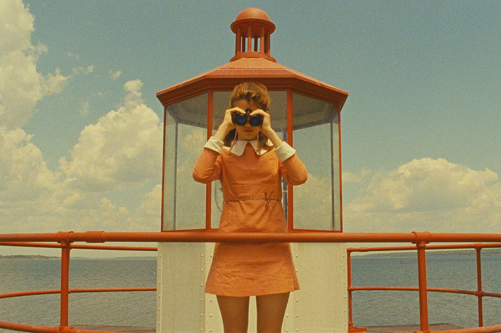

Cos'è la messa in scena?
Il termine mise-en-scène deriva dal teatro francese e significa letteralmente “mettere in scena”. Nel cinema indica tutto ciò che appare davanti alla macchina da presa: ambientazione, oggetti di scena, costumi, trucco, illuminazione, recitazione e disposizione degli attori nello spazio.
È uno degli aspetti più potenti del linguaggio cinematografico perché è ciò che lo spettatore nota per primo. La mise-en-scène crea l’atmosfera del film, definisce i personaggi e può addirittura diventare un elemento narrativo importante. Registi come Wes Anderson, Tim Burton o Alfred Hitchcock sono immediatamente riconoscibili proprio grazie al loro stile unico di messa in scena.
